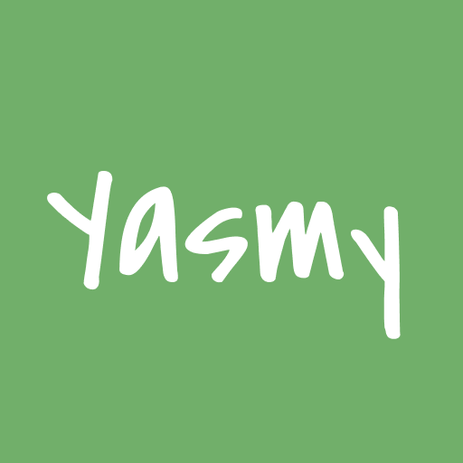
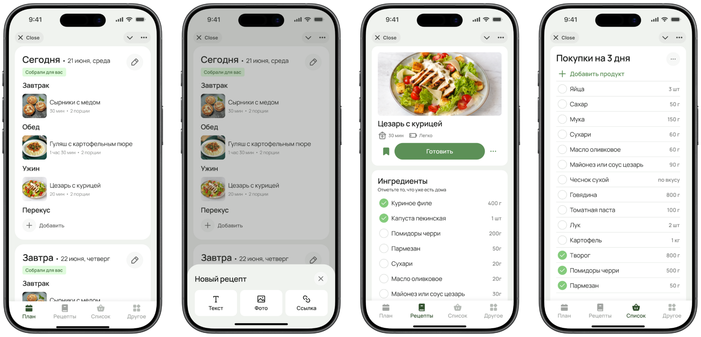
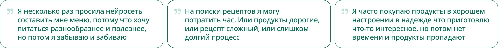
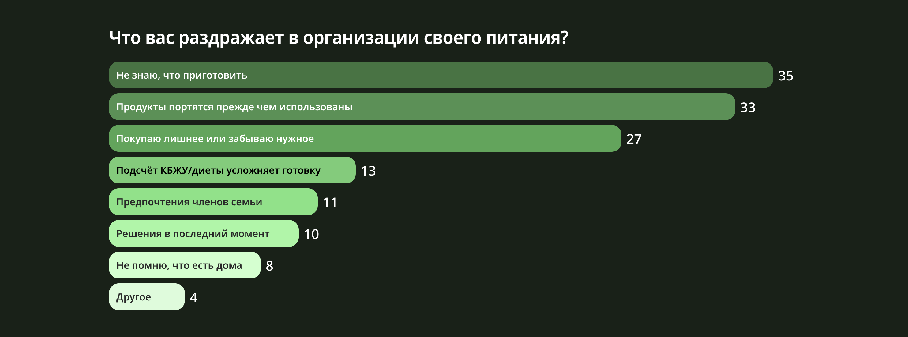
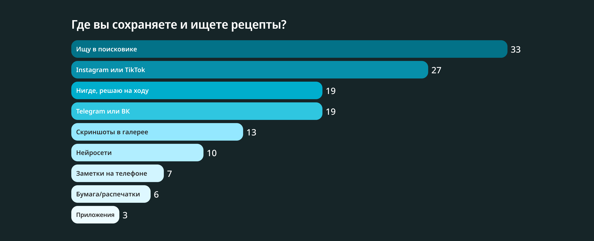
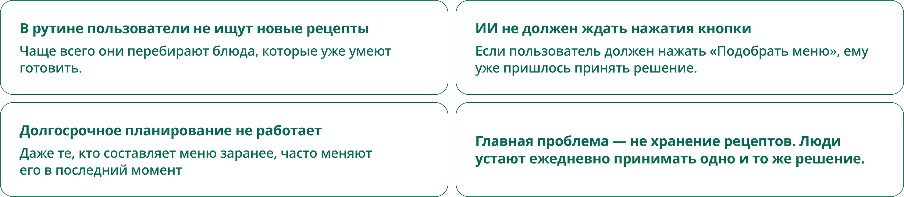

От библиотеки рецептов к продукту, который принимает решения
Как исследования изменили концепцию приложения для планирования питания и хранения рецептов

Ясми — это веб-приложение и Telegram-бот, которые собирают меню для пользователя из знакомых блюд и автоматически превращают это решение в список покупок. Кроме того, это удобное хранилище рецептов без ручного добавления: Ясми с помощью ИИ создает рецепт из ссылки на видео, текста, картинок и сохраняет в библиотеке.
коротко
После серии интервью концепция продукта полностью изменилась: вместо инструмента для хранения рецептов появился сервис, который снижает когнитивную нагрузку и помогает перестать ежедневно принимать одно и то же решение.

моя роль и вклад в проект
Ясми — это пет-проект, который мы разрабатываем вдвоём.
Я отвечаю за:
— дизайн
— разработку фронтенда c помощью Cursor
— исследования и ресерч
— формирование продуктовой стратегии
— информационную архитектуру
— проектирование сценариев
Партнёр:
— Backend
— AI
— инфраструктура
Работаем по вечерам и выходным без внешнего финансирования.
контекст
Идея появилась из личной проблемы. Каждый раз после того, как еда заканчивалась, приходилось заново думать что приготовить, искать рецепты, обсуждать меню с партнёром и составлять список покупок.
Мне хотелось создать продукт, который не просто помогает хранить рецепты, а снимает ощущение постоянной необходимости думать о еде. Отсюда появилось название Ясми — короткое, мягкое и созвучное слову «ясно».
Целью было создать ощущение спокойствия, заботы и уверенности, что решение уже принято.

первая гипотеза
Изначально я представляла Ясми как приложение для хранения рецептов и планирования меню.
Основной сценарий выглядел так:
сохранить рецепт → составить меню → получить список покупок.
Я начала проектировать первые вайрфреймы именно вокруг этой идеи. Но исследования показали, что настоящая проблема пользователей совсем в другом.
исследования
Перед разработкой хотелось понять, действительно ли проблема существует у других людей. Исследование проходило в два этапа.
Опрос (немодерируемое, количественное)
— готовят минимум раз в 2–3 дня;
— регулярно сталкиваются хотя бы с одной проблемой при организации питания;
— уверенно чувствуют себя в цифровой среде.


Интервью (модерируемое, качественное)
— сталкиваются минимум с двумя проблемами при планировании или готовке еды;
— уже используют или использовали собственные способы для организации питания.
существующие решения
Главные конкуренты Ясми — доставки готовых наборов продуктов, как Elementaree и Шефмаркет. Я проверяла их для себя несколько месяцев. Чаще всего они не закрывают вопрос с завтраками, имеют ограниченное меню и выходят дороже обычных продуктов. Но главным минусом таких сервисов для меня остается невозможность готовить свои проверенные рецепты и любимые блюда. Так что я использую такие доставки чтобы разнообразить рацион пару раз в месяц, но в остальное время готовлю по старинке.
Чаще всего пользователи собирают собственную систему из разных сервисов. Instagram, TikTok, Telegram, заметки, ВкусВилл, доставка готовой еды — каждый решает какой-то этап сценария.
Но самый сложный этап — выбрать, что готовить — остаётся на пользователе.
ключевые инсайты

новые продуктовые принципы
Все дальнейшие решения строились вокруг одного вопроса: Как уменьшить количество решений, которые принимает пользователь?
План никогда не пустой. Если пользователь ничего не запланировал, Ясми автоматически собирает меню и показывает его как «Собрано для вас».
Библиотека начинается с привычной еды:
80% базы знакомые блюда и 20% рецепты для постепенного разнообразия.
Сохранение и создание рецептов без усилий. Достаточно отправить ссылку боту или описать рецепт текстом — рецепт автоматически появится в библиотеке.
MVP
Post-MVP
промежуточный результат
Сейчас проект находится на этапе подготовки к закрытому тестированию. Уже готовы:
— продуктовая стратегия;
— веб-приложение;
— Telegram-бот;
— база рецептов.
Следующий этап — проверить, действительно ли автоматическое формирование меню снижает когнитивную нагрузку и помогает пользователям быстрее принимать решение о приготовлении еды.
Этот проект показал мне, что исследования могут изменить не только интерфейс, но и саму ценность продукта.
Я начинала с идеи сделать удобный планировщик рецептов, а пришла к сервису, который помогает человеку перестать ежедневно принимать одно и то же бытовое решение.